Córtex Estudos · 4º Semestre · Anatomia Topográfica · Aula de 02/10
Cavidade Torácica e Mediastino
Os revestimentos da cavidade torácica e os derrames pleurais, as aberturas do tórax, a divisão do mediastino pelo plano do ângulo esternal — e o conteúdo de cada compartimento: timo e vasos da base, o acesso venoso central pela jugular interna direita, o ligamento arterial, vagos e laríngeos recorrentes, o tronco simpático e a simpatectomia, o esôfago, o ducto torácico e o quilotórax, o sistema ázigo como ponte entre as cavas, o pericárdio e a punção de Marfan.
1 · Fáscia endotorácica e pleura
Revestimentos da cavidade torácica — de fora para dentro
- 1FÁSCIA ENDOTORÁCICA — o revestimento interno da cavidade torácica. Continua-se para cima como fáscia cervical profunda e para baixo como fáscia transversal do abdome.
- 2PLEURA PARIETAL — lâmina serosa junto à fáscia endotorácica.
- 3CAVIDADE PLEURAL — o espaço entre as duas lâminas — onde se acumulam os derrames.
- 4PLEURA VISCERAL — aderida ao pulmão.
- As partes da pleura recebem o nome de onde estão encostadas: COSTAL (costelas), DIAFRAGMÁTICA (diafragma) e MEDIASTINAL (mediastino) — de cada lado (na aula, o mesmo raciocínio foi estendido à visceral — ver divergência abaixo).
- A pleura mediastinal se reflete embaixo e vira diafragmática, que se reflete de novo e vira costal — dos dois lados.
- 🎯 CÚPULA PLEURAL: a parte mais alta da pleura, que sobe acima da abertura superior e pode ser alcançada na região supraclavicular (pense na punção de subclávia e no pneumotórax).
⚠️ Divergência
Nomenclatura: na aula, a visceral teria as mesmas denominações (costal, diafragmática, mediastinal). Na literatura (Terminologia Anatômica), essa divisão é da pleura PARIETAL — que tem ainda a parte cervical (cúpula); a visceral reveste o pulmão e acompanha suas faces e fissuras. Cúpula: na aula, a esquerda é "normalmente um pouco mais alta"; na literatura, as cúpulas sobem cerca de 2–3 cm acima do terço medial da clavícula dos dois lados, sem predomínio lateral consistente.
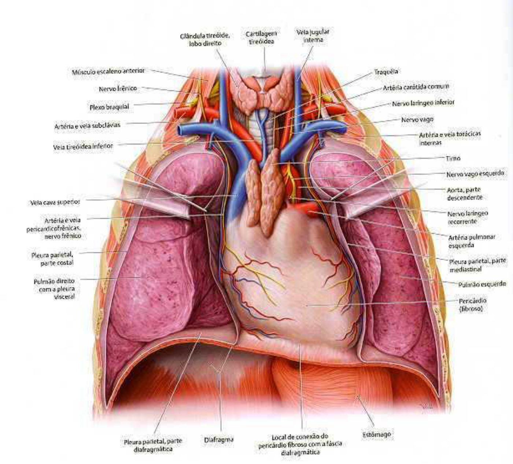
2 · Os derrames da cavidade pleural
| Conteúdo na cavidade pleural | Nome | Origem lembrada na aula |
|---|---|---|
| Pus (secreção purulenta) | EMPIEMA pleural | processo infeccioso |
| Sangue | HEMOTÓRAX | trauma, lesão vascular |
| Ar | PNEUMOTÓRAX | lesão pleuropulmonar (ex.: punção de subclávia) |
| Linfa | QUILOTÓRAX | lesão linfática — ducto torácico/cisterna do quilo |
| Líquido seroso (citrino) | derrame seroso | a pleura é serosa: produz mais líquido na inflamação |
3 · Aberturas superior e inferior do tórax
- 🎯 ABERTURA SUPERIOR: primeira costela de cada lado, manúbrio do esterno anteriormente e primeira vértebra torácica (T1) posteriormente.
- Comunicação pescoço → mediastino: a região ANTERIOR do pescoço comunica-se com o mediastino — um abscesso ou tumor cervical anterior (ex.: tireoidiano) pode infiltrar o mediastino. Lateralmente não: os espaços cervicais laterais são mais fechados em relação à região pleuropulmonar.
- ABERTURA INFERIOR: fechada pelo DIAFRAGMA (o músculo que separa tórax e abdome). Sua inserção é mais ALTA na frente (contando as costelas, já há diafragma por volta da 8ª) e mais baixa atrás — o abdome "entra" no gradeado costal.
- 🎯 A cúpula é mais alta à DIREITA (por causa do fígado) e mais baixa à esquerda (o baço é menor que o fígado).
🩺 Na prática
Ferimento penetrante baixo no tórax anterior pode atingir vísceras abdominais — principalmente o fígado, à direita — porque a cúpula diafragmática sobe dentro do gradeado costal.
4 · Mediastino: limites e divisão
- O mediastino é o espaço central entre as duas PLEURAS MEDIASTINAIS, que vão do esterno (na frente) até a coluna vertebral (atrás, paravertebral) — elas são os limites laterais.
- 🎯 Linha transversa imaginária que passa pela borda superior do pericárdio — que corresponde ao ÂNGULO ESTERNAL (de Louis), à CARINA e à 4ª vértebra torácica (disco T4–T5). Para cima: MEDIASTINO SUPERIOR. Para baixo: MEDIASTINO INFERIOR.
- O inferior divide-se em três: ANTERIOR (pré-cardíaco: na frente do pericárdio) · MÉDIO (cardíaco: pericárdio + coração) · POSTERIOR (retrocardíaco: atrás do coração). Nomes antigos: supracardíaco (= superior), pré-cardíaco, cardíaco e retrocardíaco.
- O superior não tem subdivisão real — só didaticamente se fala em frente (timo), meio (vasos da base) e trás (traqueia, esôfago).
Esquema — divisão do mediastino (vista lateral, frente à esquerda)
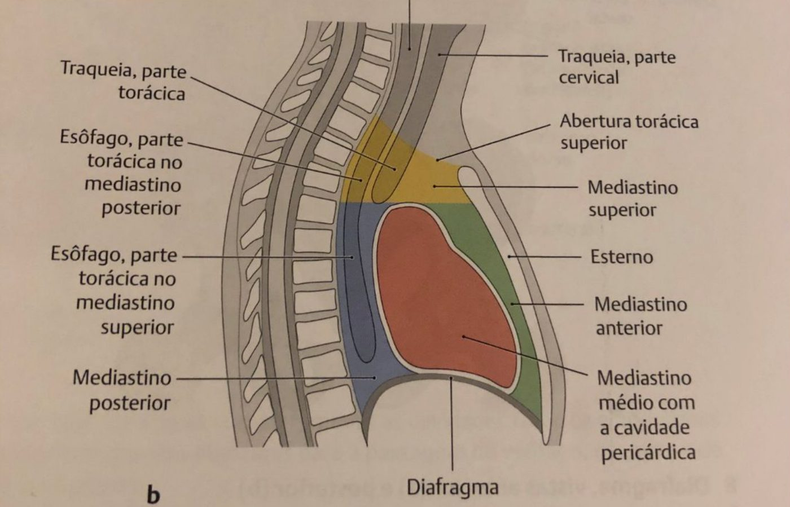
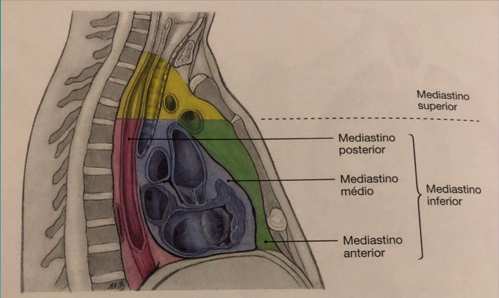
5 · Trígonos interpleurais: timo e gordura
- Afastando as pleuras mediastinais, aparecem dois espaços triangulares entre elas:
- 🎯 TRÍGONO INTERPLEURAL SUPERIOR — limitado pelas pleuras mediastinais e, em cima, pelo manúbrio: contém o TIMO ("o timo é sempre lá de cima" — a primeira estrutura do mediastino superior).
- 🎯 TRÍGONO INTERPLEURAL INFERIOR — base no processo xifoide: contém a GORDURA PRÉ-PERICÁRDICA, na frente do pericárdio.
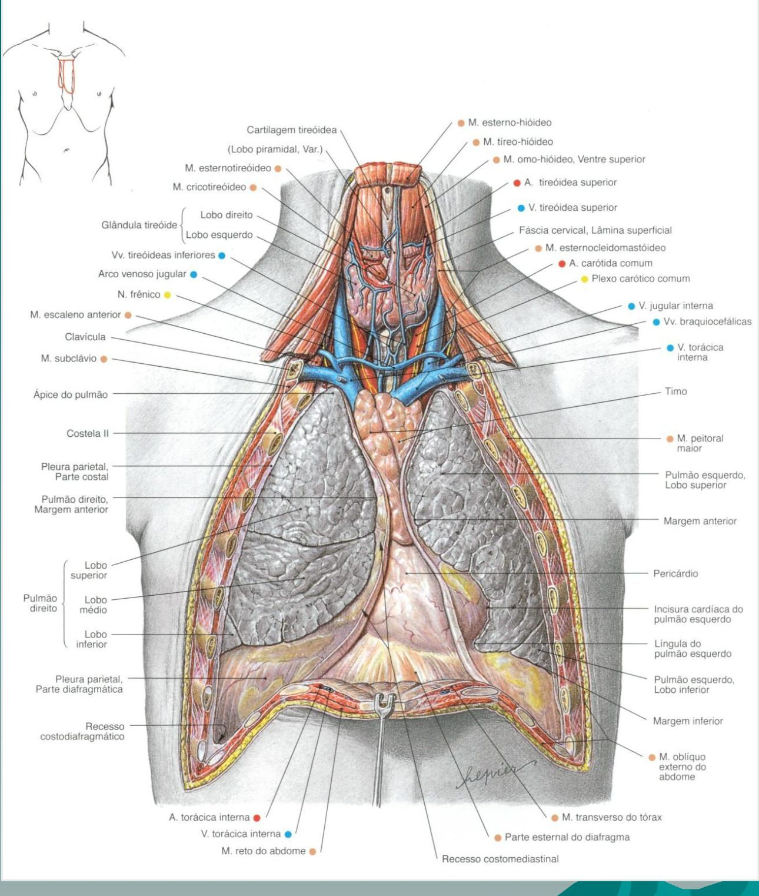
6 · Mediastino superior: de frente para trás
Camadas do mediastino superior (sequência que a aula repete)
- 1TIMO — a estrutura mais anterior.
- 2VASOS DA BASE — veias braquiocefálicas e cava superior; arco da aorta e seus ramos; tronco pulmonar e o ligamento arterial.
- 3TRAQUEIA — atrás do arco da aorta.
- 4ESÔFAGO — atrás da traqueia.
- 5DUCTO TORÁCICO → coluna vertebral — atrás do esôfago.
- Ao lado: vagos (cruzando o arco da aorta à esquerda e a subclávia à direita), frênicos (laterais), troncos simpáticos (junto à coluna), sistema ázigo (ladeando o esôfago) e os linfonodos paratraqueais e para-aórticos.
- Também no mediastino superior: a desembocadura da veia ázigo na cava superior.
7 · Veias braquiocefálicas e o acesso venoso central
- A VEIA CAVA SUPERIOR é formada pelas braquiocefálicas direita e esquerda.
- 🎯 À DIREITA, tudo é praticamente RETILÍNEO: jugular interna → braquiocefálica direita (curtinha) → cava superior.
- 🎯 À ESQUERDA, a braquiocefálica esquerda CRUZA o mediastino da esquerda para a direita: é mais comprida e o trajeto tem DUAS CURVATURAS (jugular → braquiocefálica e braquiocefálica → cava).
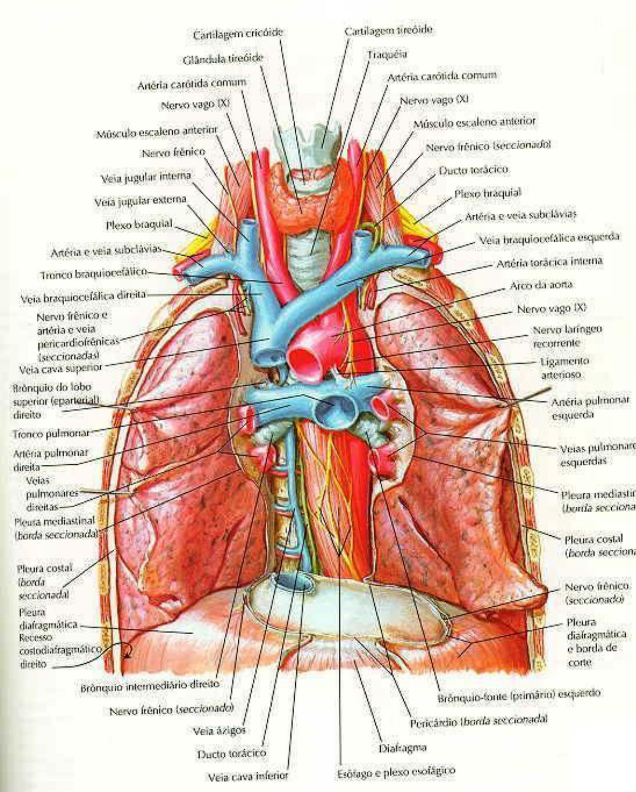
🎯 "Levem isso para o resto da vida"
Ordem de escolha para acesso venoso central ensinada na aula: 1º JUGULAR INTERNA DIREITA (curta e reta — a ponta do cateter cai na cava superior/átrio direito) → 2º jugular interna esquerda → 3º femoral → por último, subclávias (trombosam mais, risco de pneumotórax). À esquerda, o cateter mais longo e com duas curvas pode dobrar ("quincar") e fraturar e tem mais risco de trombose.
⚠️ Divergência
Na aula, a subclávia fica por último por "trombosar mais". Na literatura (ex.: ensaio 3SITES, NEJM 2015; diretrizes de prevenção de infecção de cateter), a subclávia tem as MENORES taxas de infecção e de trombose em adultos, ao custo de mais pneumotórax; a jugular interna direita guiada por ultrassom é a escolha mais usada na prática e a preferida em hemodiálise (a subclávia é evitada nesses pacientes por estenose venosa).
8 · Arco da aorta, ligamento arterial e variações
- Ramos do arco da aorta: tronco braquiocefálico, carótida comum esquerda e subclávia esquerda. A origem dos vasos supra-aórticos ainda é mediastino superior.
- Entre aorta e artéria pulmonar: o LIGAMENTO ARTERIAL (de Botallo) — o canal arterial obliterado após o nascimento.
- 🎯 O pericárdio recobre só os ~2 cm iniciais da cava superior, da aorta e da artéria pulmonar. O ligamento arterial fica ACIMA do pericárdio — EXTRAPERICÁRDICO, no mediastino superior.
🩺 Persistência do canal arterial
Se o canal não fecha, hoje se faz videotoracoscopia com um clipe no canal — sem abrir o tórax e sem abrir o pericárdio, justamente porque ele está acima do pericárdio.
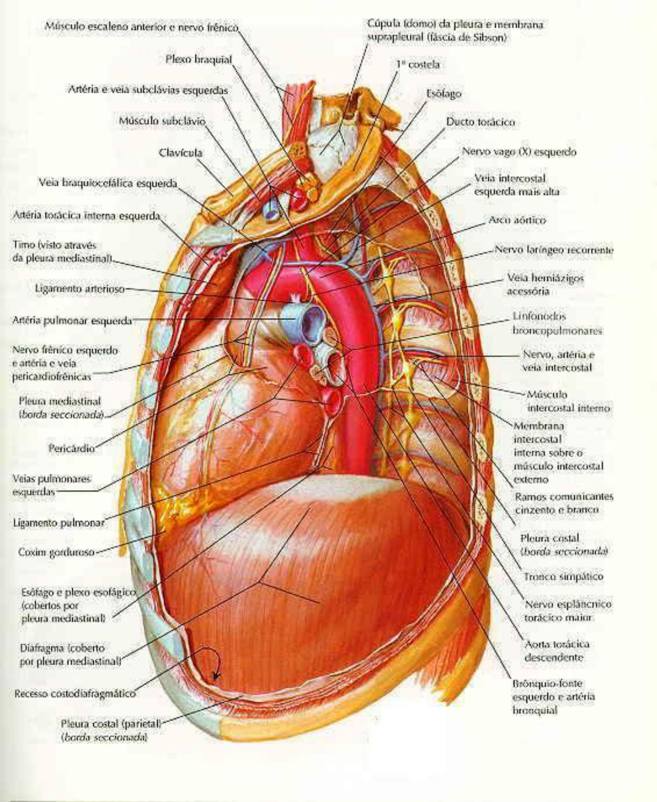
- Variações lembradas: DEXTROCARDIA (coração voltado para a direita — o ictus fica no 5º espaço intercostal direito); situs inversus totalis (tudo invertido); e a aorta saindo para a direita (inversão só dos vasos da base), inclusive com dobra da subclávia que dá sintomas tipo desfiladeiro ao elevar o braço.
- No fim da aula foi citada a artéria subclávia direita aberrante (lusória) — a subclávia direita saindo como último ramo do arco e cruzando o mediastino por trás — como assunto da próxima aula.
9 · Vagos, laríngeos recorrentes e frênicos
- O vago esquerdo cruza o arco da aorta; o vago direito cruza a subclávia direita. Os dois estão no mediastino superior.
- 🎯 LARÍNGEO RECORRENTE DIREITO: sai ainda na região cervical (contorna a subclávia) — não está no mediastino. LARÍNGEO RECORRENTE ESQUERDO: contorna por baixo do arco da aorta — está no mediastino.
- 🎯 Junto ao esôfago: o vago ESQUERDO forma o TRONCO VAGAL ANTERIOR; o vago DIREITO desce por trás do esôfago e forma o TRONCO VAGAL POSTERIOR. Eles levam a inervação para as vísceras abdominais (depois, plexo celíaco e mesentéricos — já no abdome).
- O vago no estômago aumenta a secreção ácida → a vagotomia (troncular ou seletiva) já foi usada para úlcera; hoje os inibidores de bomba de prótons (omeprazol, esomeprazol…) resolvem a maioria.
- NERVOS FRÊNICOS: laterais, descem do mediastino superior para o inferior, ao lado do pericárdio, até o diafragma.
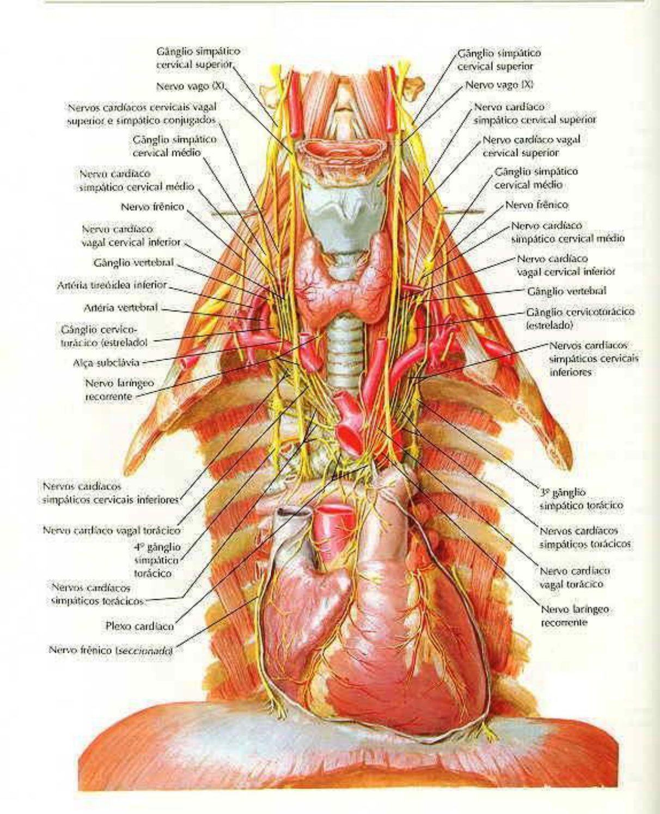
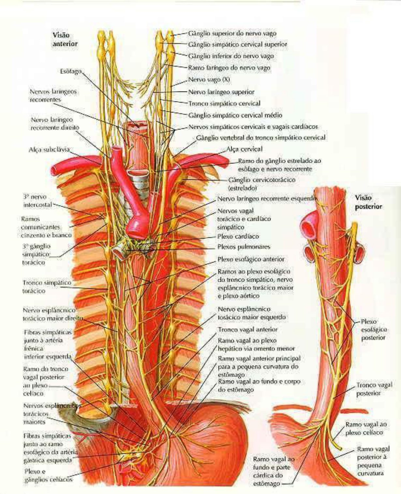
10 · Tronco simpático torácico e simpatectomia
- O TRONCO SIMPÁTICO vai "de cima até lá embaixo", junto à coluna, nos dois lados — mediastino superior e inferior posterior.
- 🎯 GÂNGLIO ESTRELADO (cervicotorácico) = gânglio cervical inferior + 1º gânglio torácico, na transição pescoço–tórax.
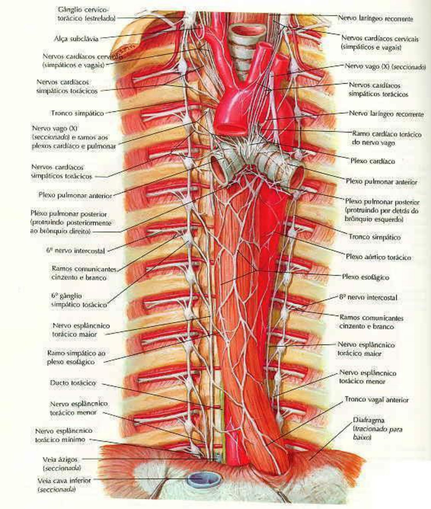
| Ação SIMPÁTICA ("alerta") | SEM o simpático (simpatectomia / lesão) | |
|---|---|---|
| Pupila | midríase | MIOSE |
| Pálpebra / olho | olho "arregalado" | PTOSE + enoftalmia (olho "para dentro") |
| Suor (mãos, axila, face) | aumenta → hiperidrose | ANIDROSE (mão seca) |
| Circulação | vasoconstrição, ↑ resistência periférica | VASODILATAÇÃO — melhora a circulação colateral |
- 🎯 SIMPATECTOMIA — duas indicações da aula: HIPERIDROSE (o paciente que não cumprimenta, que molha e borra a prova; hoje há medicamentos) e ISQUEMIA da mão (oclusão arterial distal: vasodilatar a colateral). Na versão da aula, retiram-se dois terços do gânglio estrelado, deixando um terço.
- Se a ressecção do estrelado é grande → SÍNDROME DE (CLAUDE BERNARD-)HORNER: ptose + miose + enoftalmia + anidrose. Tumores da região cervicotorácica também podem comprometer o estrelado.
- Hiperidrose que persiste/compensa em tórax, dorso e abdome: a aula atribui a uma via simpática acessória — o NERVO DE KUNTZ (por volta de T3–T4).
⚠️ Divergência
Técnica: na aula, "secção de dois terços do gânglio estrelado". Na literatura atual, a simpatectomia para hiperidrose é torácica videotoracoscópica, nos níveis T2–T4, preservando o gânglio estrelado justamente para evitar Horner. Kuntz: na literatura, o nervo de Kuntz é um ramo comunicante intratorácico entre o 2º nervo intercostal e o 1º nervo torácico (nível T1–T2), que explica falha/recidiva da simpatectomia; a hiperidrose compensatória é considerada um fenômeno reflexo, não atribuído ao Kuntz. Também: no homem a ação simpática não produz exoftalmia verdadeira, e a enoftalmia do Horner é sobretudo aparente (fenda palpebral estreitada).
11 · Traqueia, carina e esôfago
- 🎯 A traqueia é do mediastino SUPERIOR: na altura de T4–T5 ela se bifurca (carina) nos brônquios principais. NÃO HÁ TRAQUEIA NO MEDIASTINO INFERIOR — "todo mundo erra isso". Lesão no mediastino inferior não é lesão de traqueia; ali estão os brônquios.
- O ESÔFAGO está nos mediastinos superior E inferior (atrás da traqueia; depois atrás do coração), à direita da aorta descendente — desce como o tronco simpático, a ázigo e o ducto torácico.
- 🎯 Constrições fisiológicas no tórax: pelo ARCO DA AORTA e pelo BRÔNQUIO PRINCIPAL ESQUERDO (a chamada constrição aórtica; o brônquio também comprime).
- Irrigação do esôfago torácico: ramos esofágicos (e brônquicos) diretos da aorta; embaixo, a parte abdominal recebe a gástrica esquerda.
- Divertículos esofágicos: protrusão da mucosa por fragilidade da muscular — de pulsão (fraqueza) ou de tração (aderências). A gênese vem na clínica cirúrgica.
- Varizes esofágicas: dilatação das veias do plexo submucoso do esôfago quando a pressão sobe (hipertensão portal) — a fisiopatologia vem nas próximas aulas.
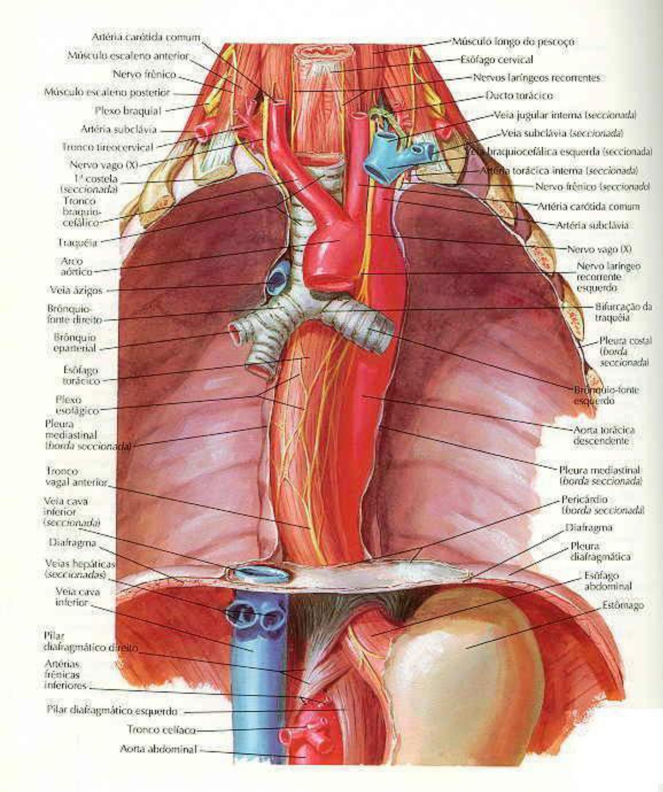
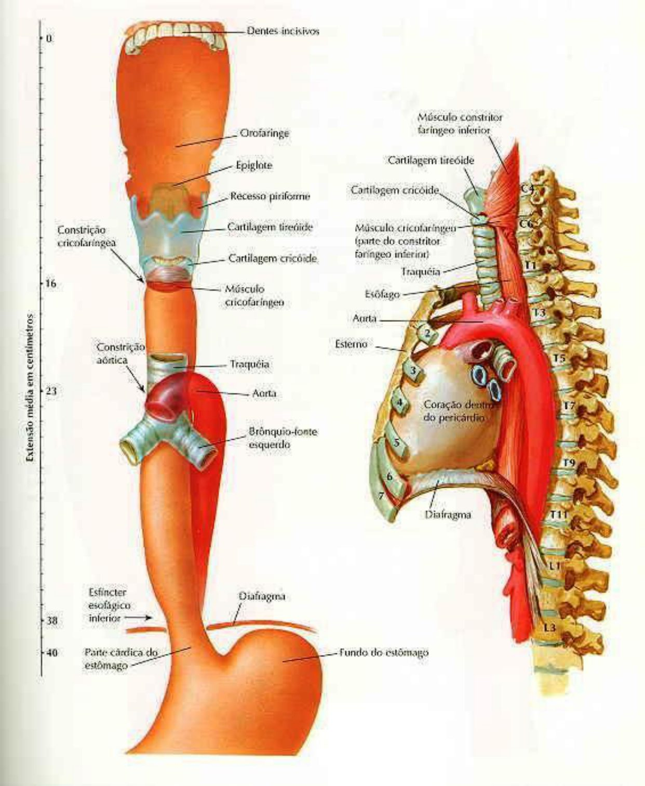
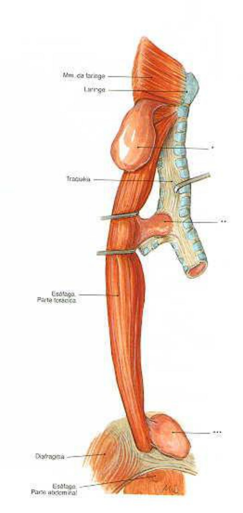
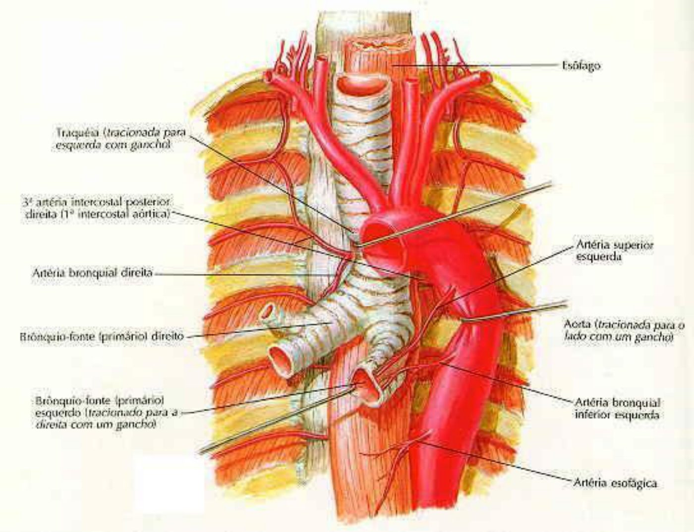
🔗 Complemento da literatura
Classicamente descrevem-se 4 estreitamentos do esôfago: cricofaríngeo (início), arco da aorta, brônquio principal esquerdo e hiato diafragmático. A aula destacou os dois torácicos.
12 · Ducto torácico e quilotórax
- Começa no abdome, na CISTERNA DO QUILO (à frente de L1–L2) — que recebe a linfa do intestino, da parede abdominal e dos membros inferiores. O slide descreve a cisterna como a dilatação formada pela junção dos troncos intestinal, lombar e intercostal descendente; o ducto é o principal coletor linfático do corpo.
- 🎯 Sobe pelo HIATO AÓRTICO (não pelo esofágico), passa à frente da coluna e ATRÁS DO ESÔFAGO, entre a ázigo (à direita) e a aorta/hemiázigo (à esquerda) — no mediastino inferior posterior e no superior.
- Na altura de T4–T5 desvia para a esquerda, sobe ao pescoço, faz um arco e desemboca no ÂNGULO JUGULOSSUBCLÁVIO ESQUERDO (entre jugular interna e subclávia esquerdas). A desembocadura varia (pode ser na jugular ou na subclávia). Os slides dão outras versões — ver a divergência abaixo.
- 🎯 Drena 3/4 do corpo: metade esquerda da cabeça e do pescoço, membro superior esquerdo, metade (esquerda) da parede torácica, a parede abdominal e os membros inferiores. O 1/4 restante (lado direito da cabeça/pescoço, membro superior direito, hemitórax direito) vai para o DUCTO LINFÁTICO DIREITO.
- Lesão do ducto → a linfa cai na cavidade pleural = QUILOTÓRAX. "Imagine quanto de linfa vai cair."
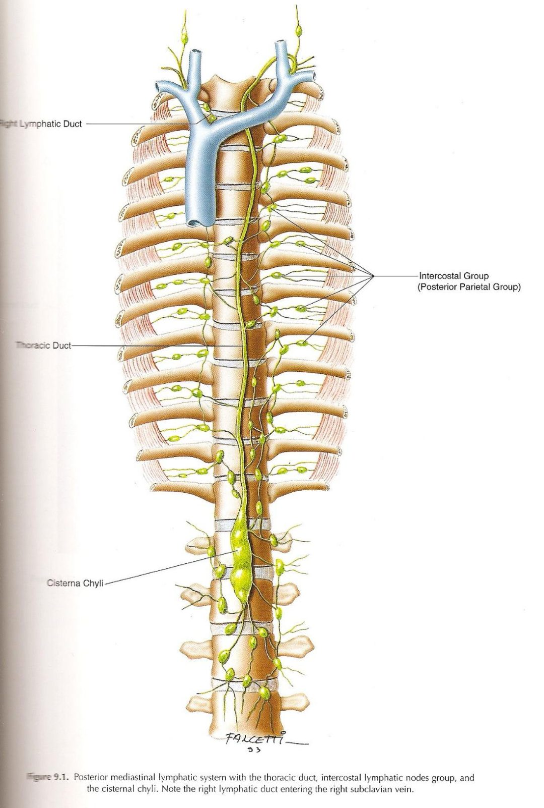
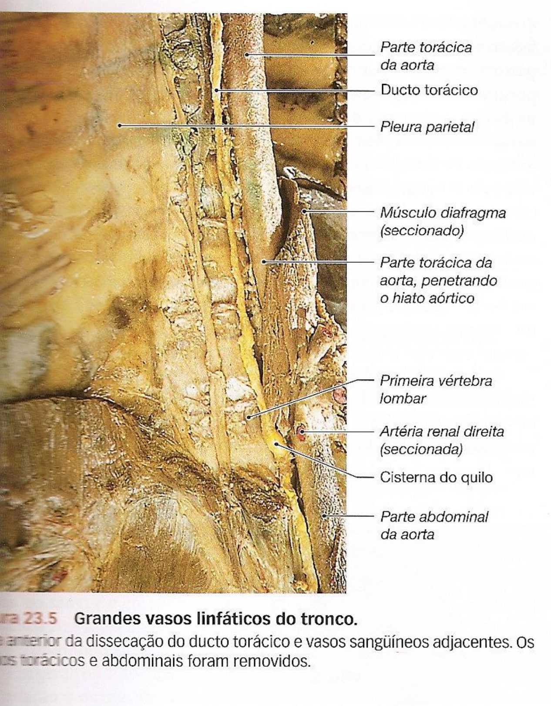
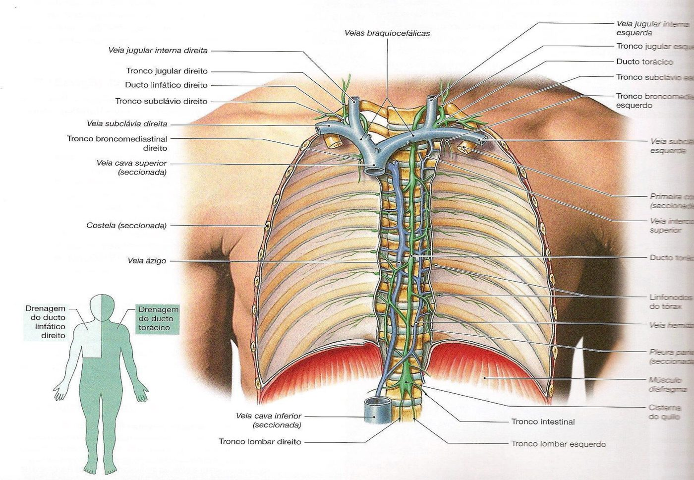
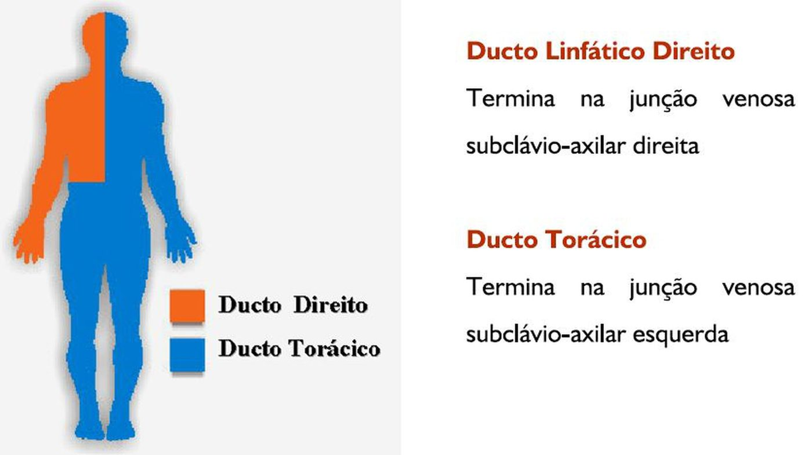
⚠️ Divergência
Volume: na aula, "3 a 4 litros de linfa por dia" passam pelo ducto. Na literatura, o fluxo habitual é de cerca de 1,5–2,5 L/dia, podendo subir bastante após refeição gordurosa. Nome: na fala, o quarto restante iria para o "ducto subclávio" direito — o nome correto é ducto linfático direito (o tronco subclávio é um de seus afluentes).
⚠️ Divergência — onde termina o ducto torácico
Na fala: no ângulo jugulossubclávio esquerdo (entre jugular interna e subclávia esquerdas), com variações. No slide de texto: "término: V. jugular interna esquerda". No slide dos territórios: ducto torácico na "junção venosa subclávio-axilar esquerda" e ducto linfático direito na "junção subclávio-axilar direita". Na literatura: o ducto termina no ângulo venoso jugulossubclávio esquerdo (a junção da jugular interna com a subclávia, origem da braquiocefálica esquerda); terminar só na jugular interna, só na subclávia ou na braquiocefálica são variações. Não existe junção "subclávio-axilar" como local de desembocadura: a axilar vira subclávia na 1ª costela, longe dali. Para a prova, fique com o ângulo jugulossubclávio esquerdo (que é o que o professor disse) e saiba que a desembocadura varia.
Esquema — mediastino inferior posterior em corte (convenção da TC: esquerda do paciente à direita da figura)
13 · Sistema ázigo: a ponte entre as cavas
- 🎯 VEIA ÁZIGO (à direita): formada pela veia lombar ascendente + veia subcostal direitas. Sobe à direita do esôfago (mediastino inferior posterior — a maior parte dela), recebe as intercostais posteriores direitas, faz um ARCO (cajado) e desemboca na VEIA CAVA SUPERIOR, acima do pericárdio — essa desembocadura já é mediastino superior.
- VEIA HEMIÁZIGO (à esquerda, embaixo): lombar ascendente + subcostal esquerdas; recebe as intercostais inferiores esquerdas e desemboca na ázigo.
- HEMIÁZIGO ACESSÓRIA (à esquerda, em cima): recebe as intercostais superiores esquerdas e, na versão da aula, desemboca na hemiázigo. Fluxo final: hemiázigo → ázigo → cava superior.
- As primeiras intercostais (1ª, 2ª, às vezes 3ª) drenam pela veia intercostal superior.
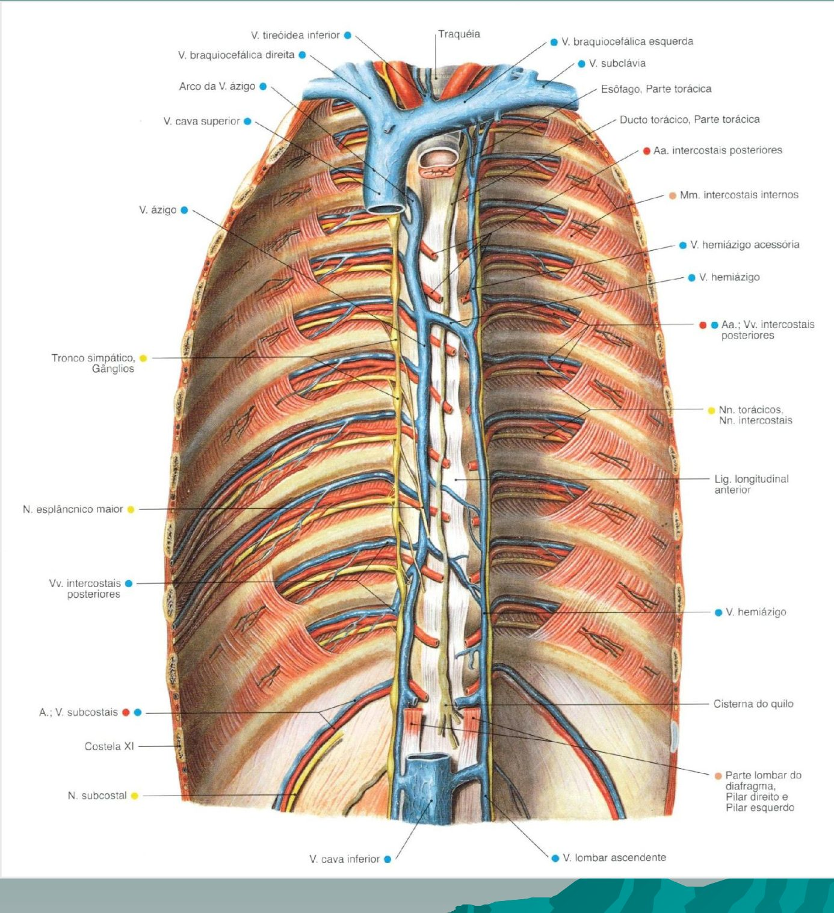
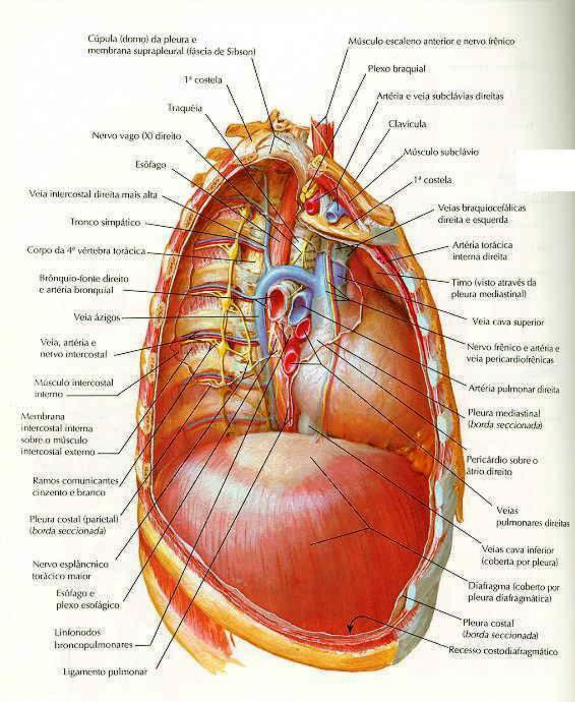
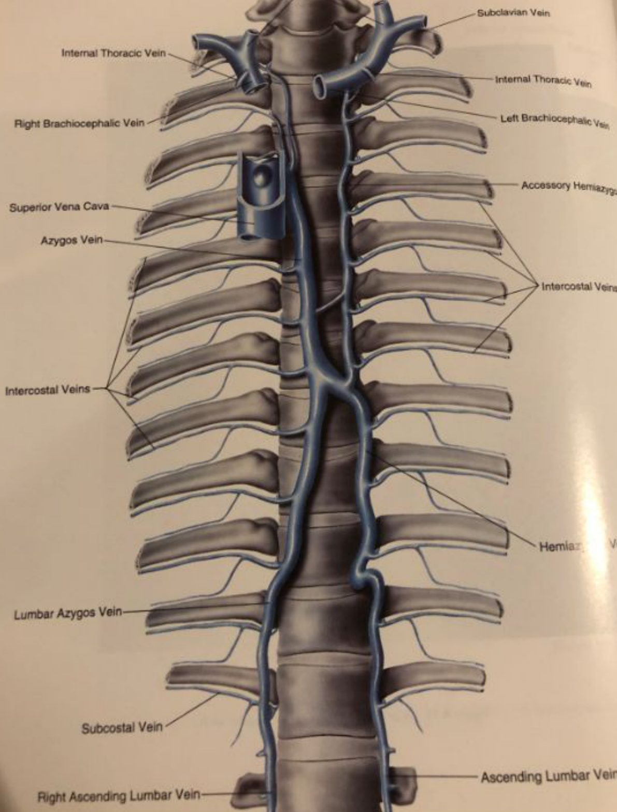
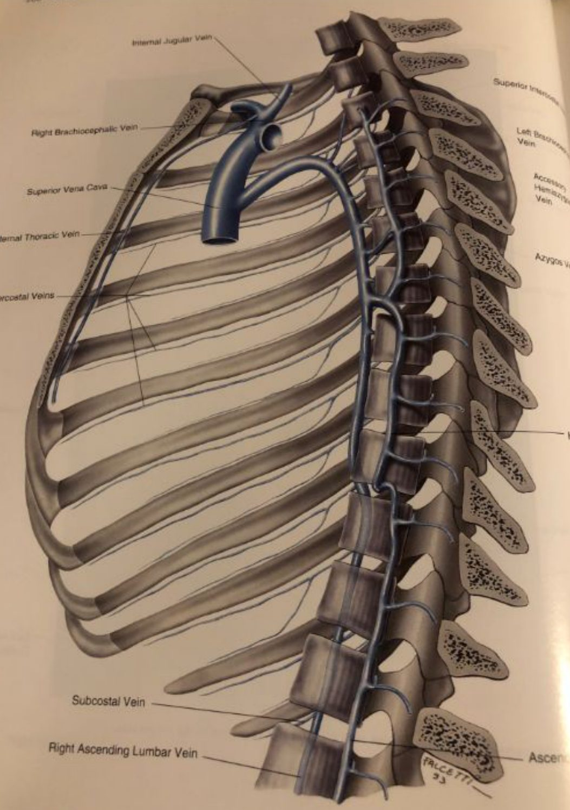
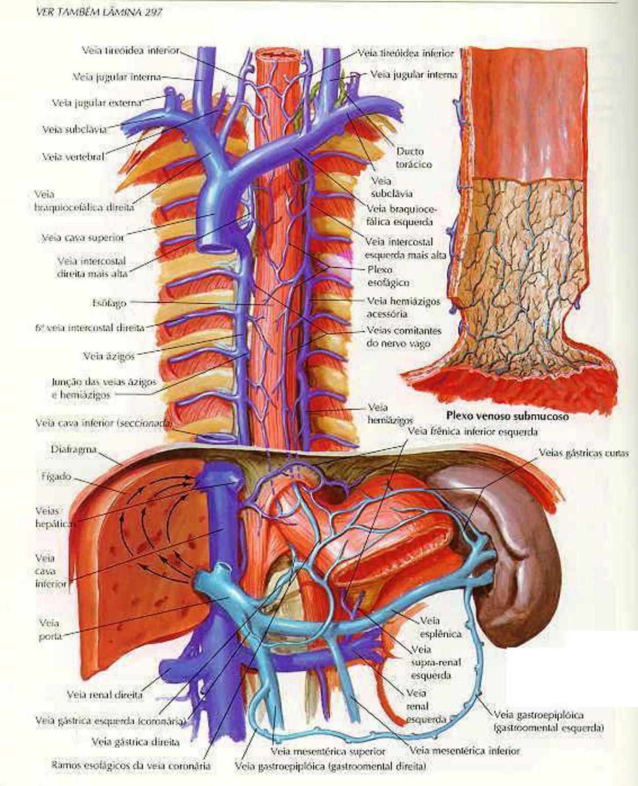
🎯 Anastomose intercavas
Pelas lombares ascendentes, o sistema ázigo comunica a cava superior com a cava inferior. Obstrução da cava SUPERIOR (ex.: paciente em diálise com cateteres trocados várias vezes, entupidos, infectados) → o sangue DESCE pela ázigo até a cava inferior. Obstrução da cava INFERIOR → o sangue SOBE pela ázigo até a cava superior. Por isso se encontram ázigo e hemiázigo calibrosas quando uma cava está ocluída — e é preciso lembrar dessas comunicações ao estudar hipertensão portal e trombose de veia porta (cirrose, esquistossomose).
⚠️ Divergência
Na aula, a hemiázigo acessória "desemboca na hemiázigo". Na literatura, ela geralmente cruza a linha média por trás da aorta (~T7–T8) e desemboca diretamente na ázigo; a união com a hemiázigo é uma das variações. Pela literatura, as intercostais superiores esquerdas (2ª–3ª) costumam drenar pela intercostal superior esquerda para a braquiocefálica esquerda.
14 · Mediastino inferior médio: pericárdio e coração
- 🎯 Conteúdo do MÉDIO: saco pericárdico + coração, os vasos PERICARDICOFRÊNICOS (irrigam e drenam pericárdio e diafragma) e os NERVOS FRÊNICOS de cada lado (que precisam chegar ao diafragma). O vago também chega ao coração.
- PERICÁRDIO FIBROSO = pericárdio de TANDLER (o mais externo). Por dentro, o pericárdio SEROSO: lâmina PARIETAL e lâmina VISCERAL (sobre o coração). 🎯 A verdadeira CAVIDADE PERICÁRDICA é entre as duas lâminas serosas.
- O pericárdio se insere no CENTRO TENDÍNEO do diafragma.
- SEIOS do pericárdio (reflexões, onde também acumula líquido): SEIO TRANSVERSO — atrás da aorta e da artéria pulmonar (cabe um dedo); SEIO OBLÍQUO — entre as veias pulmonares, atrás do coração.
- Posição do coração: o eixo base→ápice vai da direita para a esquerda, de trás para frente e de cima para baixo (obliquidade cardíaca). O ápice/ictus fica no 5º espaço intercostal esquerdo — visível pulsando nos magros.
- 🎯 VÉRTEBRAS CARDÍACAS (de Giacomini): T5 a T8 (às vezes T9) — o coração "assenta" sobre elas. Carlo Giacomini, anatomista de Turim.
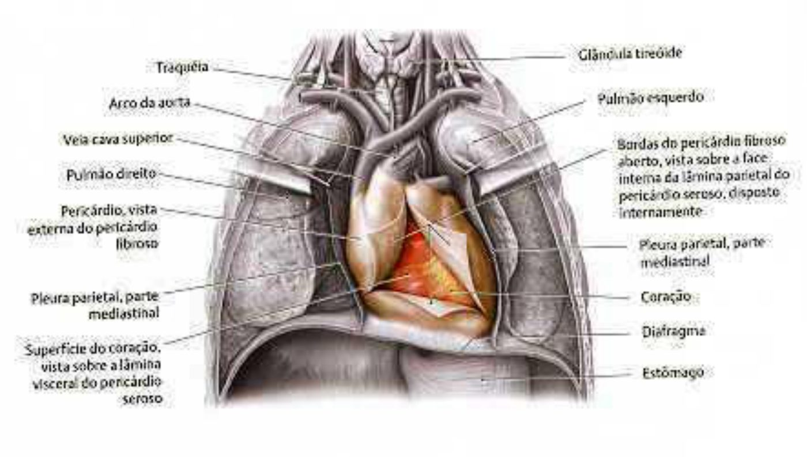
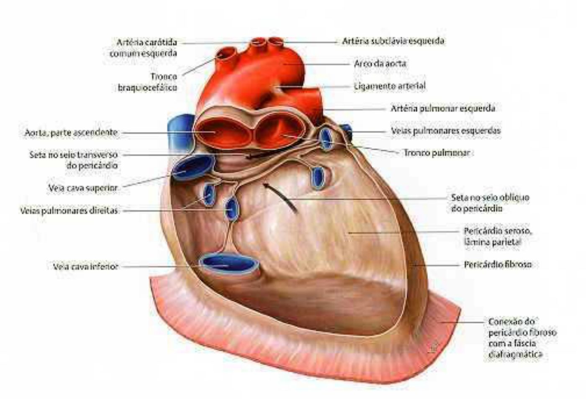
⚠️ Divergência
Na aula, os pericardicofrênicos "vêm da subclávia". Na literatura, a artéria pericardicofrênica é ramo da TORÁCICA INTERNA (que, por sua vez, sai da subclávia); a veia drena para a torácica interna ou a braquiocefálica.
15 · Hemopericárdio, tamponamento e punção de Marfan
- Sangue na cavidade pericárdica = HEMOPERICÁRDIO — ex. da aula: cateter que perfurou o átrio. O coração não consegue se expandir: TAMPONAMENTO CARDÍACO → parada cardíaca. É emergência.
- 🎯 PUNÇÃO DE MARFAN (pericardiocentese): agulha calibrosa entrando por baixo do processo XIFOIDE (subxifoide), em direção ao lado esquerdo/cavidade pericárdica, já aspirando enquanto avança. Idealmente guiada por ultrassom (para não furar o coração) — na emergência, muitas vezes não há.
- Alternativa: drenagem da cavidade pericárdica por via subxifoide, deixando um dreno.
- Derrame seroso volumoso (pericardite, processo reumático) também pode exigir punção — depende da quantidade de líquido.
16 · Mediastino inferior posterior (e o anterior)
- 🎯 ANTERIOR (pré-cardíaco): na aula, só gordura (pré-pericárdica). "Todos os órgãos estão no médio e no posterior."
- 🎯 POSTERIOR (retrocardíaco) — onde está a maior parte das estruturas: esôfago com os troncos vagais, aorta torácica descendente (à esquerda do esôfago), ázigo (à direita), hemiázigo (à esquerda), ducto torácico (atrás do esôfago), troncos simpáticos, vasos e nervos intercostais posteriores e linfonodos (para-aórticos, paraesofágicos).
- Linfonodos mediastinais: paratraqueais e para-aórticos em cima, junto à aorta e ao esôfago embaixo.
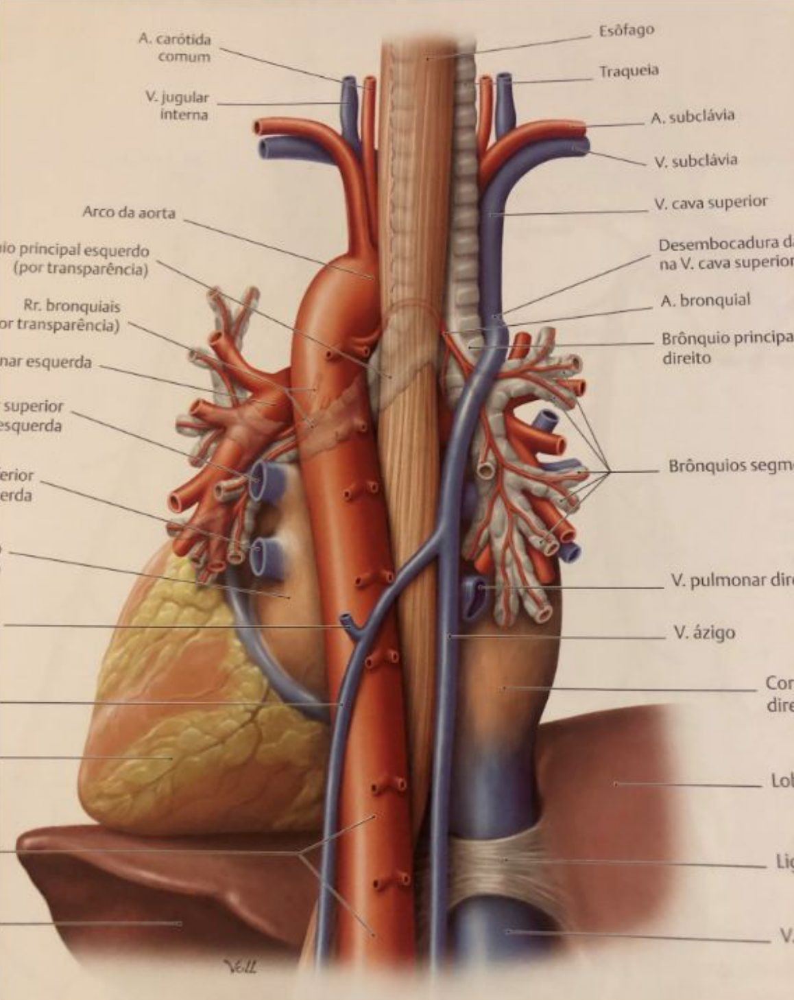
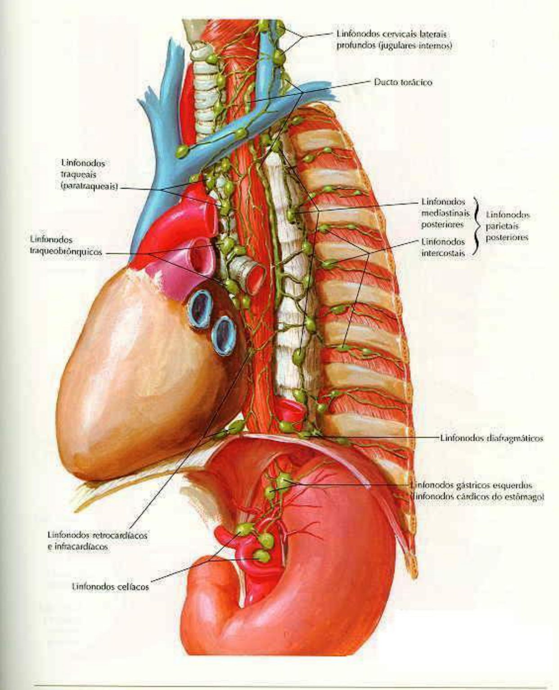
⚠️ Divergência
Na literatura, o mediastino anterior contém, além da gordura, os ligamentos esternopericárdicos, linfonodos, ramos dos vasos torácicos internos e, em crianças, a porção inferior do timo.
17 · Resumo rápido
- Revestimentos: fáscia endotorácica (↑ cervical profunda, ↓ transversal) → pleura parietal (costal/diafragmática/mediastinal) → cavidade pleural → visceral. Derrames: empiema (pus), hemotórax (sangue), pneumotórax (ar), QUILOTÓRAX (linfa), seroso.
- Aberturas: superior = 1ª costela + manúbrio + T1; pescoço ANTERIOR comunica com o mediastino. Inferior = diafragma, mais alto na frente e à DIREITA (fígado).
- Divisão: plano do ângulo esternal · carina · T4–T5 · borda superior do pericárdio → SUPERIOR × INFERIOR (anterior = gordura · médio = pericárdio/coração · posterior). Trígonos: superior = TIMO · inferior = gordura pré-pericárdica.
- Superior, de frente para trás: timo → vasos da base → traqueia → esôfago → ducto torácico → coluna. Braquiocefálica E cruza o mediastino (longa, 2 curvas) → acesso venoso: JUGULAR INTERNA DIREITA primeiro.
- Arco: tronco braquiocefálico, carótida comum E, subclávia E · ligamento arterial EXTRAPERICÁRDICO (clipe por videotoracoscopia). Recorrente E no mediastino (arco); D no pescoço (subclávia). Vago E → tronco ANTERIOR; D → POSTERIOR.
- Simpático: estrelado = cervical inferior + T1 · simpatectomia (hiperidrose, isquemia) → anidrose + vasodilatação; ressecção ampla → HORNER (ptose, miose, enoftalmia, anidrose).
- Traqueia só no superior (bifurca em T4–T5). Esôfago: constrições pelo arco da aorta e brônquio principal E; irrigação por ramos diretos da aorta.
- Ducto torácico: cisterna do quilo (L1–L2) → hiato AÓRTICO → atrás do esôfago → à esquerda em T4–T5 → ângulo jugulossubclávio E; drena 3/4 do corpo; lesão = quilotórax.
- Ázigo: lombar ascendente + subcostal D → arco → cava superior; hemiázigo → ázigo · anastomose INTERCAVAS (diálise com cava superior ocluída).
- Médio: pericárdio fibroso (Tandler) + seroso (cavidade entre parietal e visceral) · seios transverso e oblíquo · frênicos e pericardicofrênicos · vértebras de Giacomini T5–T8 · hemopericárdio → tamponamento → PUNÇÃO DE MARFAN subxifoide.
🗺️ Resumão Pré-Prova — Cavidade Torácica e Mediastino
Revisão da véspera · Anatomia Topográfica · aula de 02/10 · só o que foi enfatizado
- Fáscia endotorácica = revestimento interno · sobe como cervical profunda, desce como transversal.
- Pleura parietal (costal · diafragmática · mediastinal) × visceral; cavidade pleural entre elas · cúpula alcançável na fossa supraclavicular.
- Derrames: EMPIEMA (pus) · HEMOTÓRAX (sangue) · PNEUMOTÓRAX (ar) · QUILOTÓRAX (linfa) · seroso (inflamação).
- Abertura superior: 1ª costela + manúbrio + T1 · pescoço ANTERIOR comunica com o mediastino (abscesso/tumor cervical anterior → mediastino); lateral não.
- Abertura inferior = diafragma: mais alto na FRENTE e à DIREITA (fígado).
- Limites laterais: pleuras mediastinais (esterno → coluna).
- Plano transverso: borda superior do pericárdio = ângulo esternal (Louis) = CARINA = T4–T5.
- SUPERIOR (sem subdivisão real) × INFERIOR: ANTERIOR (pré-cardíaco, gordura) · MÉDIO (pericárdio + coração) · POSTERIOR (retrocardíaco).
- Trígono interpleural SUPERIOR = TIMO · INFERIOR = GORDURA PRÉ-PERICÁRDICA.
- Frente → trás: TIMO → VASOS DA BASE → TRAQUEIA → ESÔFAGO → DUCTO TORÁCICO → coluna.
- Cava superior = braquiocefálicas D + E · D curta e reta · E cruza o mediastino, longa, 2 curvas → acesso venoso: 1º JUGULAR INTERNA DIREITA → jugular E → femoral → subclávias (na aula).
- Arco: tronco braquiocefálico · carótida comum E · subclávia E · LIGAMENTO ARTERIAL (Botallo) EXTRAPERICÁRDICO → PCA fechada com clipe por videotoracoscopia, sem abrir o pericárdio. Pericárdio cobre só ~2 cm dos vasos da base.
- Recorrente E contorna o ARCO (está no mediastino) · recorrente D contorna a SUBCLÁVIA (no pescoço).
- Vago E → tronco vagal ANTERIOR · vago D (por trás do esôfago) → POSTERIOR · vago ↑ secreção ácida (vagotomia).
- Estrelado = cervical inferior + 1º torácico · simpatectomia (hiperidrose, isquemia) → anidrose + vasodilatação; ressecção ampla → HORNER: ptose, miose, enoftalmia, anidrose · nervo de Kuntz (via acessória).
- Traqueia SÓ no mediastino superior (carina em T4–T5) — no inferior há brônquios.
- Posterior: esôfago + troncos vagais · aorta descendente (à E do esôfago) · ázigo (D) · hemiázigo (E) · ducto torácico · simpáticos · intercostais · linfonodos.
- Esôfago: constrições pelo ARCO DA AORTA e BRÔNQUIO PRINCIPAL E · irrigação: ramos esofágicos/brônquicos diretos da aorta (embaixo, gástrica E) · divertículos (pulsão/tração) · varizes = plexo submucoso.
- Ducto torácico: CISTERNA DO QUILO (L1–L2) → HIATO AÓRTICO → ATRÁS DO ESÔFAGO (entre ázigo e aorta) → à E em T4–T5 → ângulo jugulossubclávio ESQUERDO (desembocadura varia; os slides dizem "jugular interna E" e "junção subclávio-axilar" — fique com o ângulo jugulossubclávio).
- Drena 3/4 do corpo (só NÃO drena: lado D da cabeça/pescoço, MS direito, hemitórax D → ducto linfático direito) · lesão = QUILOTÓRAX.
- Ázigo = lombar ascendente + subcostal D → arco (cajado) → cava superior acima do pericárdio · hemiázigo → ázigo.
- ANASTOMOSE INTERCAVAS: cava superior ocluída (diálise, muitos cateteres) → sangue DESCE pela ázigo → cava inferior; cava inferior ocluída → SOBE.
- Médio = pericárdio + coração + vasos PERICARDICOFRÊNICOS + nervos FRÊNICOS.
- Pericárdio fibroso = de TANDLER · seroso: parietal + visceral · CAVIDADE PERICÁRDICA entre as lâminas serosas · inserção no centro tendíneo.
- Seios: TRANSVERSO (atrás da aorta e pulmonar) · OBLÍQUO (entre as veias pulmonares).
- Ictus no 5º EIC (dextrocardia: 5º EIC direito) · vértebras de Giacomini T5–T8.
- HEMOPERICÁRDIO → TAMPONAMENTO → PUNÇÃO DE MARFAN: subxifoide, rumo à esquerda, aspirando (ou drenagem subxifoide).
| Par | A diferença-chave |
|---|---|
| Trígono interpleural superior × inferior | TIMO × gordura pré-pericárdica |
| Braquiocefálica D × E | curta e reta × cruza o mediastino, longa, 2 curvas |
| Recorrente D × E | subclávia, no pescoço × arco da aorta, no mediastino |
| Tronco vagal anterior × posterior | vago ESQUERDO × vago DIREITO |
| Hiato do ducto torácico | AÓRTICO (não o esofágico) |
| Ducto torácico × ducto linfático direito | 3/4 do corpo × lado D da cabeça/pescoço, MS D, hemitórax D |
| Ázigo × hemiázigo | direita, → cava superior × esquerda, → ázigo |
| Traqueia × brônquios | mediastino superior × inferior (abaixo da carina) |
| Pericárdio fibroso × seroso | Tandler (externo) × parietal + visceral (a cavidade fica entre elas) |
| Seio transverso × oblíquo | atrás de aorta/pulmonar × entre as veias pulmonares |
| Simpático ativo × simpatectomia | midríase, hiperidrose, vasoconstrição × miose, ptose, anidrose, vasodilatação |
Banco de Questões — Cavidade Torácica e Mediastino
Anatomia Topográfica · aula de 02/10 · estilo ENADE/residência.